Five, six, count the sticks.
Seven, eight, put them straight.
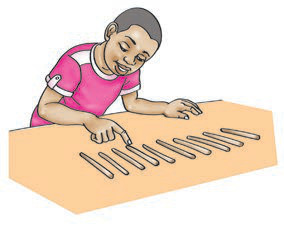
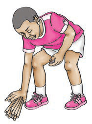
Nine, ten, a big fat hen.
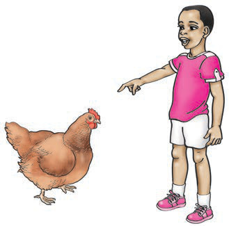
Lyrics’ source: https://texttolearn.com/song/one-two-tie-my-shoe/
2.
Read the following numbers aloud. Or sign the following numbers.
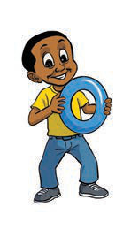
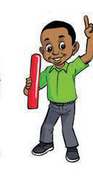
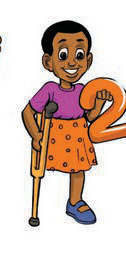
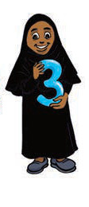
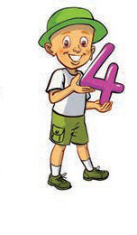
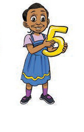
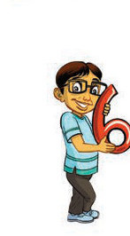
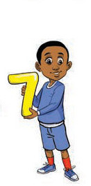
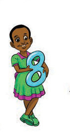
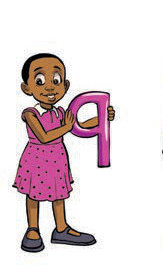
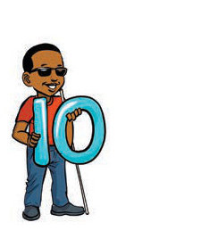